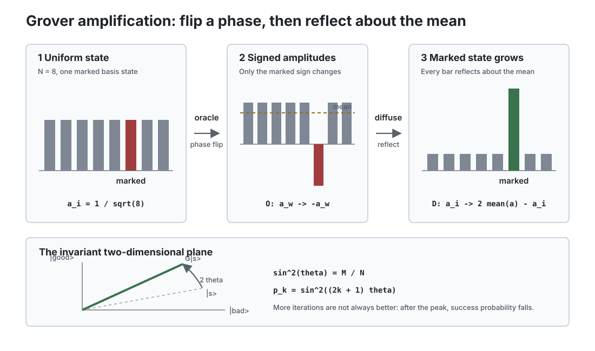

量子信息 II · 量子算法
对标：Nielsen & Chuang §4–6 ｜ 前置：qi-01、数论一嘴（Shor 的归约）、信息论线 量子计算的加速从哪来？不是"并行试所有答案"（读出只得一个随机分支）——而是干涉：编排相位让错误答案相消、正确答案相长。本页沿三级台阶爬完这个思想：Deutsch–Jozsa（概念验证）→ Grover（平方加速，通用但温和）→ Shor（指数加速，专用但致命）。

1. 干涉计算的最小样本：Deutsch–Jozsa
问题：黑盒 \(f: \{0,1\}^n \to \{0,1\}\) 保证"恒常或平衡"，判定是哪种。经典最坏 \(2^{n-1} + 1\) 次查询；量子 1 次。
【推导（电路三步）】 ① \(H^{\otimes n}\) 造均匀叠加；② 相位查询 \(|x\rangle \to (-1)^{f(x)}|x\rangle\)（把函数值写进相位——相位回踢技巧）；③ 再 \(H^{\otimes n}\) 测量：全零态的振幅 \(= \frac{1}{2^n}\sum_x(-1)^{f(x)}\)——恒常时 \(= \pm1\)（必测得全零）、平衡时 \(= 0\)（必测不得）。\(\blacksquare\) 读法：一次查询把 \(f\) 的全局性质（所有值的和）压进一个振幅——干涉在算内积；代价是放弃逐点信息（读不出任何单个 \(f(x)\)）：量子加速 = "用全局问题换全局手段"，这个交换条件是三个算法共同的隐藏合同。
2. Grover 搜索（平方加速）
问题：\(N = 2^n\) 项无结构搜索，标记项 1 个。经典 \(O(N)\)；量子 \(O(\sqrt N)\)。
【推导（几何全貌）】 两个反射的复合：Oracle \(O\)（对标记态反相）+ 扩散算子 \(D\)（对均匀态 \(|s\rangle\) 反射）。在 \(\{|s\rangle, |w\rangle\}\) 张成的二维平面内，\(DO\) = 旋转，角步 \(2\theta\)（\(\sin\theta = \frac{1}{\sqrt N}\)）——每次迭代把态向答案转 \(2\theta\)，约 \(\frac{\pi}{4}\sqrt N\) 步转到位。\(\blacksquare\)（多解版 \(\sqrt{N/M}\)；过转会转过头——迭代数要算准：量子算法"不能贪心多跑"的怪脾气。）
最优性【引用 BBBV】：无结构搜索量子下界就是 \(\Omega(\sqrt N)\)——Grover 不可改进；平方加速是"蛮力问题"的天花板（暴力破解 128 位密钥 → 有效 64 位：对称密码加倍密钥长度即可回防——量子威胁的冷静刻度）。
3. Shor 分解（指数加速，密码学的判决）
归约链（经典部分）：分解 \(N\) → 求 \(a^x \bmod N\) 的周期 \(r\)（数论：\(r\) 偶且 \(a^{r/2} \neq -1\) 时 \(\gcd(a^{r/2} \pm 1, N)\) 给因子——欧几里得算法收尾）。周期求解（量子部分）【骨架】：
- 叠加态上算模幂 \(\sum_x|x\rangle|a^x \bmod N\rangle\)（可逆电路）；
- 测第二寄存器 ⇒ 第一寄存器塌缩成周期梳（间隔 \(r\) 的叠加）；
- 量子 Fourier 变换（QFT——离散 Fourier 的酉实现，电路深度 \(O(n^2)\)：蝶形结构与 FFT 同构，数分 IV/数值线的老朋友）把周期梳变频率峰；
- 测量得 \(\approx \frac{kN'}{r}\)，连分数展开提取 \(r\)。
复杂度 \(O((\log N)^3)\) vs 经典亚指数（数域筛）——指数级碾压。\(\blacksquare\)
读法：加速的来源仍是干涉（QFT = 精心编排的全局干涉，读出"周期"这个全局量——§1 合同的最高执行）；杀伤范围精确：RSA/ECC（周期结构）阵亡，AES/哈希只受 Grover 级威胁——后量子密码（格密码等——数学站的格与 LWE 是其地基【引用】）迁移正在进行时："先收集后解密"使迁移在量子机到来前就是紧迫的。
现代版图一嘴：量子相位估计（Shor 内核的推广——化学模拟的主引擎）、HHL 线性方程组（有条件的指数加速——条件苛刻，营销常忽略【引用】）、VQE/QAOA（NISQ 变分路线——qm-04 变分法的量子机版，qi-03 接）。
4. 练习与要点
例 1（相位回踢亲手推） \(|x\rangle\frac{|0\rangle - |1\rangle}{\sqrt2} \xrightarrow{U_f} (-1)^{f(x)}|x\rangle\frac{|0\rangle - |1\rangle}{\sqrt2}\)——辅助位不变、相位跳到数据位：三个算法共用的第一技巧，两行代数写全。
例 2（Grover 步数） \(N = 10^6\)：\(\frac\pi4\sqrt N \approx 785\) 次 vs 经典期望 \(5\times10^5\) 次；但若每次 Oracle 昂贵且经典有结构可用（排序/哈希）——经典反超："无结构"前提是 Grover 优势的全部（工程评估的第一问）。
例 3（Shor 玩具例） \(N = 15, a = 7\)：\(7^x \bmod 15 = 7, 4, 13, 1, \dots\) 周期 \(r = 4\)；\(\gcd(7^2 \pm 1, 15) = \gcd(48, 15), \gcd(50,15) = 3, 5\) ✓——纸上跑通全链（历史上第一个被量子计算机分解的数就是 15【引用】）。\(\blacksquare\)
下一页：让量子计算在嘈杂世界活下来——退相干、量子纠错与阈值定理，以及 NISQ 时代的现实地图。